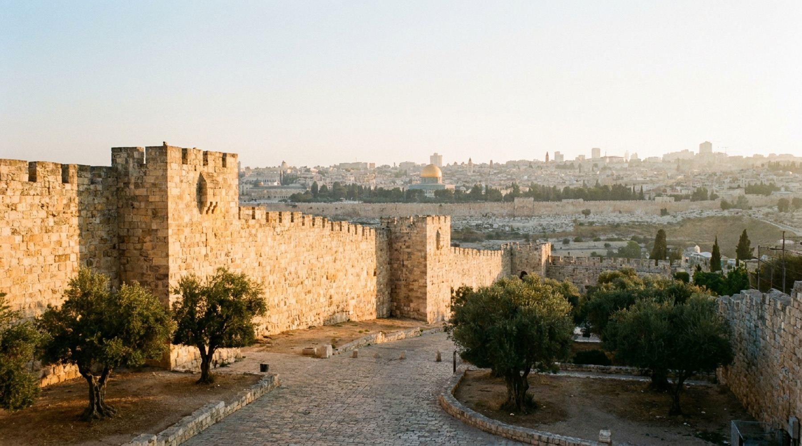
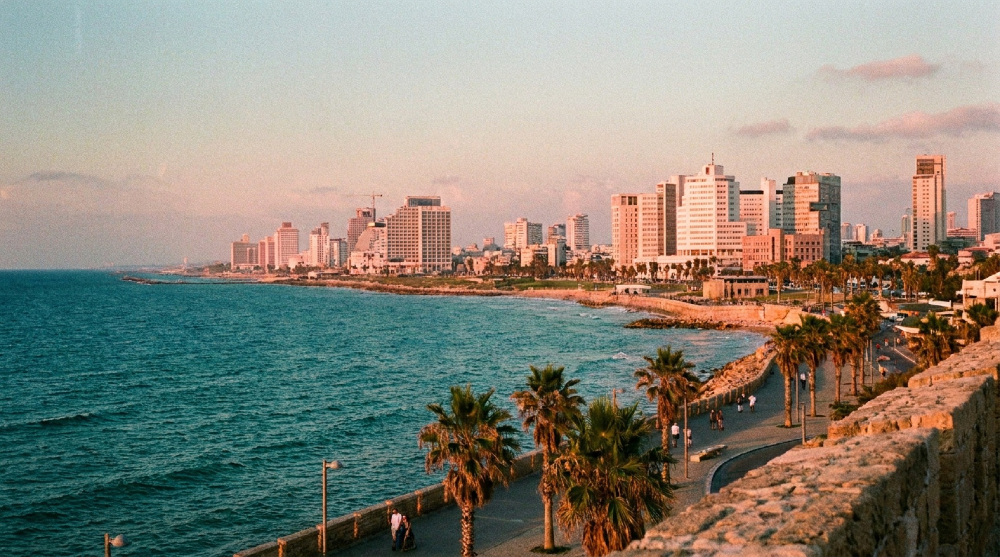
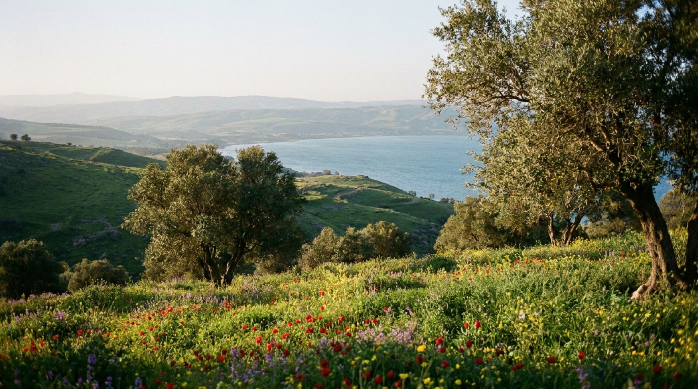
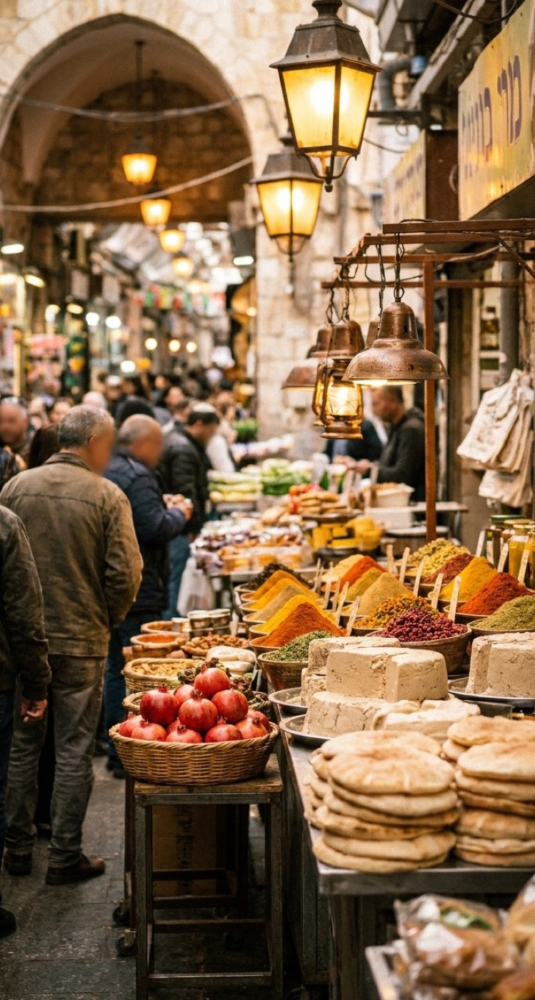
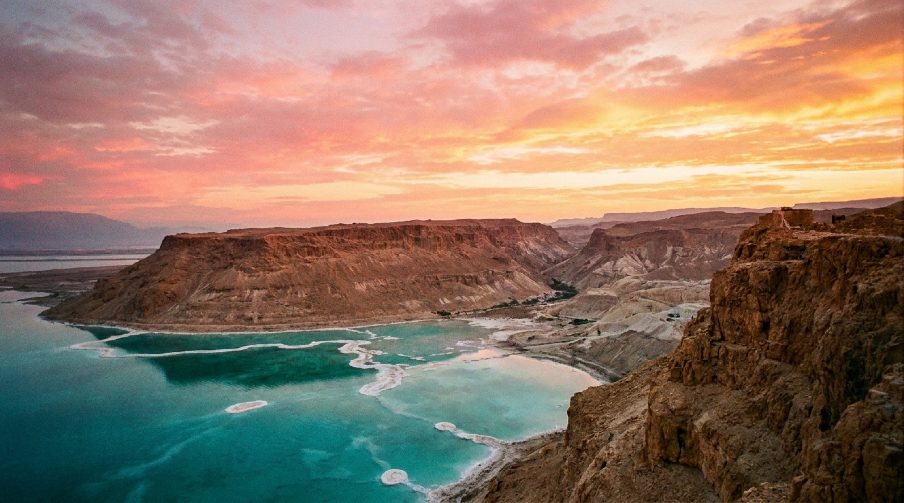

A trip for two · March 2027
Beaches, Galilee hills, Shabbat in Jerusalem and a float on the Dead Sea, done smart and on budget.
The trip at a glance
Tel Aviv first to shake off the flight, up north for spring in the Galilee, Jerusalem for Shabbat, then a desert day before flying home.
3
nights · Sat–Tue
Beaches, Jaffa, markets and bikes.
2
nights · Tue–Thu
Rosh Pinna, Tzfat, the Kinneret.
3
nights · Thu–Sun
Old City, the shuk, a full Shabbat.
1
night · Sun–Mon
Masada and a float, then dinner by the port.
10 days
on the ground, 9 nights
≈ $3,830
per person, all-in (CAD)
1 car
6 days, Tue → airport
Flights · Toronto ⇄ Tel Aviv
We compared every fare Google Flights listed for four March weeks. LOT hits the sweet spot of price and travel time.
Our pick · economy, round trip
Out · Fri 12 Mar
YYZ 10:35 PM → TLV 7:45 PM (Sat)
14 h 10 m · 1 h 55 m layover in Warsaw
Home · Mon 22 Mar
TLV 10:45 AM → YYZ 9:35 PM
16 h 50 m · 3 h 10 m layover in Warsaw
≈ CA$1,850
per person · ≈ $3,700 for two
$1,580
Ethiopian via Addis Ababa. Saves ≈ $540 for two, adds ~6 hours each way.
$2,335
Air Canada nonstop, 10 h 35 m, Thu 11 → Sun 21 Mar ($1,958 via travel agencies).
$1,688
Air France via Paris if you shift to 10 → 20 Mar.
$1,247
Late January (20–30 Jan) was the cheapest window.
| 12 → 22 Mar | pp |
|---|---|
| Porter+Transat+Ryanair+Wizz* · 33 h | $1,379 |
| LOT · Warsaw+Kraków · 22 h 50 | $1,562 |
| Ethiopian · Addis · 20 h 10 | $1,580 |
| LOT · Warsaw (10 h layover) | $1,582 |
| SAS+Air France+El Al · 27 h 45 | $1,721 |
| KLM · Amsterdam+Bucharest | $1,751 |
| LOT · Warsaw · 14 h 10 (pick) | $1,850 |
| Delta+El Al · New York (long) | $1,973 |
| Delta+El Al · New York | $2,036 |
| Air Canada+Austrian · Vienna | $2,038 |
| United · Newark | $2,122 |
| Air Canada+SWISS · Zürich | $2,184 |
| Air France+KLM · Paris | $2,255 |
| 10 → 20 Mar | pp |
|---|---|
| Aer Lingus+Wizz* · 18 h 20 | $1,575 |
| KLM · 2 stops · 23 h | $1,644 |
| Air France · Paris · 12 h 45 | $1,688 |
| LOT · Warsaw · 14 h 10 | $1,767–1,864 |
| Ethiopian · Addis | $1,672–1,980 |
| AC+Austrian · Vienna | $1,853–2,063 |
| AC+Lufthansa · Munich | $1,795–2,004 |
| AC+SWISS · Zürich | $1,839–2,049 |
| AC+Lufthansa · Frankfurt | $2,015 |
| Delta · New York | $2,219 |
| United · Newark | $2,233–2,369 |
| 11 → 21 Mar | pp |
|---|---|
| Azores+Ryanair+Wizz* · 30 h | $1,426 |
| Transat+easyJet+Aegean* · 22 h | $1,481 |
| Ethiopian · Addis · 20 h 10 | $1,684–1,875 |
| LOT · 2 stops · 46 h | $1,653 |
| LOT · Warsaw · 17 h 35 | $1,732–1,859 |
| AC+SWISS · Zürich | $1,927–2,304 |
| AC+Lufthansa · Frankfurt | $1,943–2,195 |
| Air Canada · nonstop · 10 h 35 | $1,958–2,335 |
| AC+Lufthansa · Munich | $2,313–2,332 |
| United · Newark | $2,406 |
| Air France · Paris | $2,607 |
| 13 → 23 Mar | pp |
|---|---|
| Transat+easyJet+Wizz* · 28 h 40 | $1,500 |
| Ethiopian · Addis · 20 h 10 | $1,516–1,604 |
| Transat+Wizz* · London · 16 h 25 | $1,562 |
| KLM+Air France · 2 stops | $1,584 |
| LOT · Warsaw · 14 h 10 | $1,777–1,878 |
| Air France · Paris | $1,777–2,071 |
| BA+American · London | $1,866 |
| AC+Austrian · Vienna | $1,893–1,977 |
| United · Newark | $1,930 |
| AC+SWISS · Zürich | $1,985–2,058 |
| AC+Lufthansa · Munich | $2,076–2,166 |
| Delta · New York | $2,907–2,984 |
Round trip, economy, CAD per person incl. taxes, from Google Flights on 13 Nov 2026. A range = airline price vs. cheapest travel-agency price. * Self-transfer on separate tickets: a missed connection isn’t covered and bags cost extra.
Where we sleep
Each stay was checked twice on Google Hotels for our exact dates: once for value, once for the highest guest ratings.
Tel Aviv · 3 nights
The Saul
★ 4.8 · 469 reviews
≈ CA$191 / night
Industrial-chic boutique in the centre, walk to the beach and Dizengoff.
Splurge: Backstage (Atlas), ★ 4.9, $322
Galilee · 2 nights
Olea, Rosh Pinna
★ 4.8 · 199 reviews
≈ CA$248 / night
Stone village above the Hula Valley, 20 min to Tzfat and the Kinneret.
Splurge: Edmond Hotel & Spa, ★ 4.7, $489
Jerusalem · 3 nights
Prima Royale
★ 4.6 · 3.5K reviews
≈ CA$257 / night
Kosher breakfast, Shabbat-friendly, walk to Ben Yehuda and the Old City.
Splurge: Dan Boutique, ★ 4.6, $348
Tel Aviv · last night
Abraham Tel Aviv
★ 4.6 · 6.5K reviews
≈ CA$149 / night
Lively and social, free breakfast, 20 min to the airport.
Book a private room
Google guest ratings · CAD per night for 2 adults on our dates · checked 13 Nov 2026. Adults-only hotels left out.

Days 1–3 · Tel Aviv
A slow start after the flight. Almost everything here is free.
Sat
13 Mar
Taxi (≈ NIS 180) to The Saul, late dinner on Dizengoff.
Sun
14 Mar
Flea market, stone alleys, hummus at Abu Hassan, sunset at Frishman Beach.
Mon
15 Mar
Tel-O-Fun bikes to the Port and Yarkon Park, sabich in the shuk, Neve Tzedek, Florentin graffiti.

Days 4–6 · Galilee
March means wildflowers and the great crane migration.
Tue
16 Mar
Caesarea’s Roman harbour, lunch in Zichron Ya’akov, sunset in old Rosh Pinna.
Wed
17 Mar
Golf carts around the Hula lake among thousands of cranes, then Tzfat’s artists’ quarter.
Thu
18 Mar
Cliff-edge hike over the Kinneret, then 2.5 h to Jerusalem on Route 6.
Stay west of Highway 98 and 5 km+ from Lebanon (Canada’s no-go zones).

Days 6–8 · Jerusalem
The heart of the trip, timed so Shabbat lands in the middle.
Thu
18 Mar
Afternoon at Yad Vashem (free). Thursday night Machane Yehuda becomes a street party.
Fri
19 Mar
Ramparts walk, Jewish Quarter, Kotel Tunnels, the Friday shuk rush, Kabbalat Shabbat at the Wall.
Sat
20 Mar
Yemin Moshe, the Montefiore Windmill, the Israel Museum’s Dead Sea Scrolls, Ben Yehuda after dark.
No trains or buses from Friday afternoon to Saturday night.

Days 9–10 · Dead Sea & home
One big desert day, then a last night near the airport, because every flight home leaves in the morning.
Sun
21 Mar
Leave 6:30 via Beersheba and Arad. Cable car up Masada, ibex at Ein Gedi, float at Ein Bokek’s free beach.
Sun
evening
About 2.5 h back via Arad, sunset dinner at the old port, sleep at Abraham.
Mon
22 Mar
7:30 AM to Ben Gurion, return the car, 10:45 AM flight, Toronto by 9:35 PM.
Drive via Arad, not Route 90 from Jericho (West Bank).
Optional upgrade
Swap Jerusalem’s Saturday night for the desert: leave after Shabbat, climb Masada at sunrise. With Kfar Hanokdim it’s $137 cheaper.
Best value
$120
Bedouin-style desert village near Masada’s west gate. Camels, campfire, pool.
Top rated
$140
Small guesthouse in Arad, 25 min above the Dead Sea (81 reviews).
Splurge
$376
Five-star resort in Ein Bokek with spa, pools and breakfast.
Eat like a local
Budget ≈ CA$85 a day for two: hotel breakfast, street-food lunch, casual dinner. NIS 1 ≈ CA$0.38.
Hummus legend, closes when it sells out. ≈ NIS 30
Eggplant, egg and amba in pita. ≈ NIS 30
Stuffed pitas and the roasted cauliflower. ≈ NIS 50
Roadside, baked on a dome while you wait. ≈ NIS 25
Lunch on the old pedestrian street in wine country.
Pack it for the golf carts at Agamon Hula.
Slow-cooked Kurdish and Iraqi stews since 1952. ≈ NIS 60
Gooey chocolate rugelach, buy a box for Shabbat.
No-frills hummus off Ben Yehuda. ≈ NIS 35
The budget
| Item | For two (CAD) |
|---|---|
| Flights, LOT round trip × 2 | $3,700 |
| Hotels, 9 nights | $1,990 |
| Rental car 6 days + gas | $600 |
| Taxis, trains, parking | $150 |
| Sights & activities | $350 |
| Food, 10 days | $850 |
| ETA-IL entry permits | $20 |
Estimated total
$7,660
≈ CA$3,830 each, all-in
Fly Ethiopian (−$540) and stay at Abraham all four Tel Aviv nights (−$130) to bring it near $7,000. Late-January dates cut flights further.
Flights and hotels are live quotes from 13 Nov 2026. Car, food and activities are estimates.
Before we book
1
Canada says avoid non-essential travel to Israel (updated 29 Jul 2026). Recheck before paying.
2
Flexible fares and hotels, plus insurance that covers Israel.
3
Canadians need this online entry permit (NIS 25). Apply a few weeks ahead.
4
Canada’s Registration of Canadians Abroad, plus the Home Front Command app.
5
No trains or buses Fri afternoon to Sat night. Pre-book Friday dinner.
6
Layers (10–22 °C), modest clothes for the Kotel, water shoes for the Dead Sea.
Next step: book the flights, then the hotels